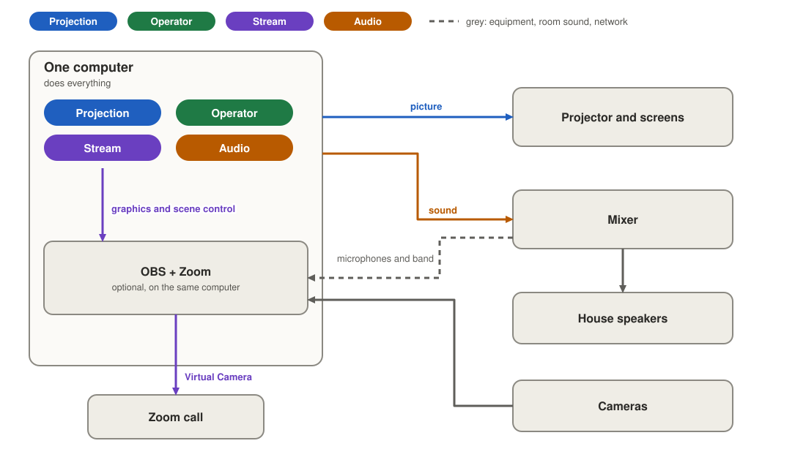
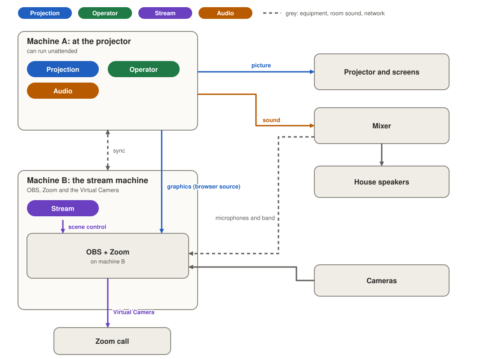
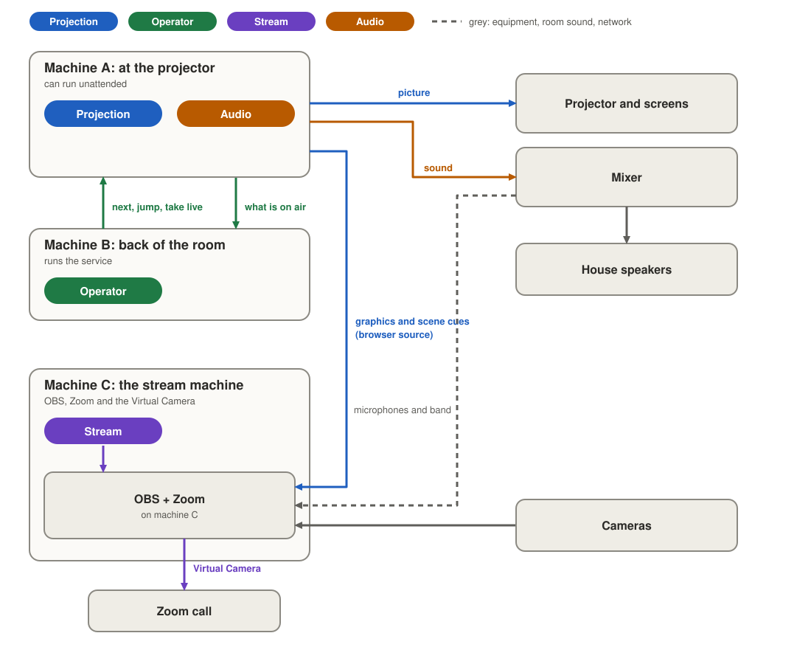
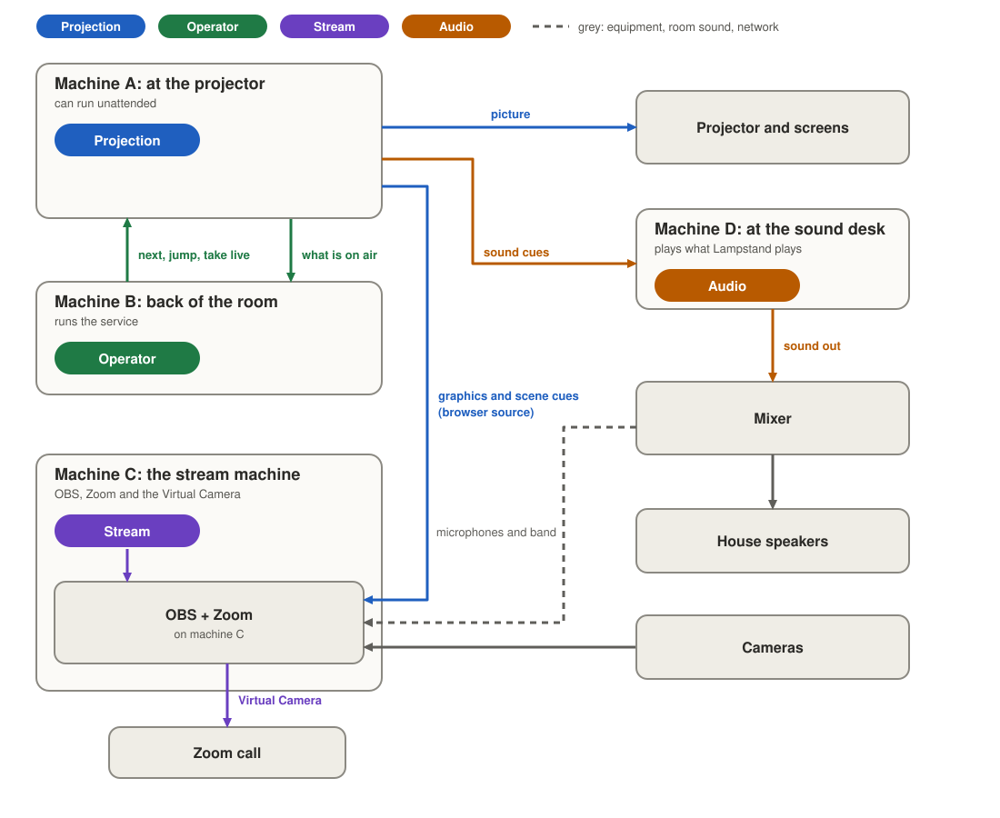
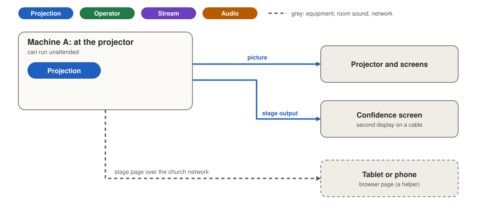

Roles: who runs what
On Sunday a few jobs need doing at once: the screens, the service, the stream and the sound. Roles let a team share those jobs across their computers, and pass a job from one computer to another by asking.
Status: roles arrive in Lampstand 0.8.0. Lampstand is in development and nothing is released yet. Parts that are designed but not built yet say Not built yet. The roles work is tested on macOS and Windows.
Watch: who runs what
What a role is
A role is a job that someone is doing right now. It is not a permission. Each job is done by one computer at a time, and one computer can do any mix of jobs. A computer with no job can still plan the service and keep in step with the others, and shows Planning.
If you only have one computer, you do not need to do anything. It does all four jobs, and none of the words on this page appear.
The four jobs
| Lampstand says | Job | What it looks after |
|---|---|---|
| Runs the screens | Projection | The picture on the projector and the stage screens. It belongs to the computer plugged into them, and it can run on its own with nobody sitting there. |
| Runs the service | Operator | Next, back, and jumping to any item. It needs someone to be running the screens. |
| Runs the stream | Stream | OBS, the live stream and its mutes. It keeps working even if the projector computer is away. |
| Runs the sound | Audio | The sound Lampstand plays: videos, music and backing tracks. It plays from the computer next to the mixer. |
The names in the second column are the ones used in the video and the technical guide.
Only a computer that has screens set up (a projector, a stage display, or its own display as a screen) can run the screens. On any other computer the Take button for the screens is greyed out and says “No screens are set up on this device”. Running the screens moves only when the cable does: for example a spare laptop plugged into the same projector switch.
One, two, three or four computers
You can start with one computer and add others later. The service works the same way each time. In each picture a box is a computer and the coloured labels inside it are the jobs it does: blue for the screens, green for the service, purple for the stream, orange for the sound.
One computer
It does all four jobs, and there is nothing to set up. OBS and Zoom, if you use them, run on the same computer. The room’s sound is whatever that computer plays, so for Zoom, send a feed from the mixer into the computer.

Two computers
The computer at the projector runs the screens, the service and the sound. A second computer, the stream computer, runs the stream: OBS, Zoom and the OBS Virtual Camera (OBS’s way of sending its picture into Zoom as if it were a webcam). It can sit anywhere the cameras and the mixer feed can reach.
- Pair the two in Setup › Devices. The computer that shows the pairing code runs the screens, the service and the sound (if it has screens set up).
- On the stream computer, open Setup › Devices, find Runs the stream and press Take. The projector computer shows “Mary’s laptop wants to run the stream”; choose Allow (or Always allow this device, so it just works next Sunday).
- Set up OBS on both computers (see Setting up OBS) so the stream shows Lampstand’s pictures.
Until someone takes the stream, the projector computer keeps looking after OBS as before. Use a wired network and, if you can, fixed addresses (ask whoever looks after your network). A variation: the second computer is another operator laptop, and OBS stays where it was.

Three computers
A laptop at the back of the room runs the service, so someone can run it from where they can see everything. The projector computer runs the screens (and the sound), and the stream computer runs the stream. If the projector computer drops off the network, the laptop’s service controls wait and wake when it is back, and the stream computer keeps working; scene changes wait for the projector computer.

Four computers, with the sound desk
Where the mixer is far from the projector, a computer at the sound desk runs the sound. Backing tracks and video sound then play from there, straight into the mixer. The projector computer keeps drawing the screens and stays silent. In Setup › Sound, on the sound desk computer, choose the mixer’s USB interface as Sound output, not the projector’s. Passing the sound to another computer stops whatever is playing, and the question says so before you agree.

Cameras, microphones and the mixer
None of this goes through Lampstand, and no job owns it.
- Cameras belong to OBS. Plug them into the stream computer (USB, or an HDMI capture box), or bring them in over the network (network cameras, NDI or RTSP). The simplest is to put the stream computer near the cameras and the mixer.
- Microphones, the band and the room mix come from your mixing desk. Whatever the mixer sends has to reach the computer running Zoom and the OBS Virtual Camera. One common way: a feed from the desk into a USB audio interface on the stream computer, used as the Zoom microphone (with “Original sound” on) and as an OBS audio source. That is an example, not a rule.
- Lampstand’s own graphics reach OBS as a browser source, so the stream shows camera and graphics together, switched from the stream computer.
- Lip-sync tip. If the stream’s sound runs ahead of its picture, delay the mixer’s source in OBS: Advanced Audio Properties, then Sync Offset, until sound and picture match.
Music, backing tracks and video sound
Sound that Lampstand plays (a video’s sound, a music-only item, a backing track for the singers) comes out once, in the room, from the computer that runs the sound.
- Switch it on. Setup › Sound has Use sound in services, off until you turn it on. It only adds the buttons in Plan for adding sound (Add sound, Add a backing track). Sound already in a service always shows. A church that never turns it on sees nothing about sound.
- Plan it. A music-only item sits in the running order with a name, a length and a choice: Plays on its own or Waits for someone to press play. A backing track belongs to a song and, if it plays on its own, starts when the song goes live. The service shows the total music time. Any computer can plan sound; the files travel to your other computers, and Plan marks “File missing” on an item whose file has not arrived.
- Play it. Present lists the service’s sound with Play, Pause, Resume, Fade out and a big Stop the sound now. A music-only item plays when someone presses Play. If the screens computer drops off, what is playing keeps playing and can be stopped, but nothing new starts.
- Where it comes out. Setup › Sound has Sound output, used by the computer that runs the sound. Changing it stops what is playing.
- If nobody runs the sound, Present says “Nobody runs the sound.” in the sound panel, and if the computer that does is off the network it says “The device that runs the sound is not connected.” Nothing warns about the stream: if nobody runs the stream, the projector computer looks after OBS.
Not built yet: sending Lampstand’s sound to the stream. The plan is a switch in Setup › OBS (off by default) so that OBS picks up Lampstand’s sound itself and the stream’s sound and picture stay in step. It needs a test with OBS first, and that test has not been run. Until then, send Lampstand’s sound to the stream through the mixer (a feed from the sound computer into the mixer, and from the mixer to the stream computer), and use the lip-sync tip above if the sound is early or late. Planned, too: a warning that names the item that will not play.
Stage and confidence screens
A confidence screen (the speaker’s notes, the next slide, the clock) is not a job. Today it is a second display on the computer that runs the screens, set up as a stage screen; the cable run to the stage is the limit. For a stage far from the projector, the plan is a web page on a tablet on a music stand, opened by QR code. It would only show what the screens show, never run anything, and would not disturb the main screens if it lost Wi-Fi. Not built yet.

Phones and tablets
A phone or tablet in a browser is a helper. It acts for the computer that runs a job, by sending next, back, blank and logo to the computer that runs the screens, and later the stop-the-sound button. It never runs a job itself and never appears in the list of who runs what. Not built yet: the tablet remote is designed but is not in the app. For now, a second laptop can run the service. A web view of the stream for someone walking the room is a later idea.
Passing a job on
The same rules work for every job.
- Ask. On the computer that wants the job, press Take. It shows “Waiting for Sanctuary PC to allow…”.
- Allow or Not now. The computer doing the job sees “Mary’s laptop wants to run the stream” and chooses Allow or Not now. For the service and the stream there is also Always allow this device, remembered for next time and listed in Setup › Devices, where you can stop it. If they say Not now, the asker sees “Sanctuary PC said not now” with Ask again; nothing changes.
- One ask at a time. If two computers ask together, the second is told “Mary’s laptop is already asking” and can ask again afterwards.
- Offline takeover. If the computer doing the job has been off the network for two minutes (you can change this in Setup › Devices, Take over without asking after), another computer can take it without asking, after confirming: “Mary’s laptop has been offline for 5 minutes. Run the stream from here?” The asker waits ten seconds beyond the time you set (so two minutes ten with the default), and the Take button says how long is left. A short network drop never counts, and it never happens while the computer is connected. If nobody does the job at all, Take works at once, with no question.
- A computer that comes back learns it lost the job and shows “Mary’s laptop took over running the stream while this device was offline. This device no longer runs the stream.” It does not take the job back by itself.
What happens on air
- Clearing the screens. Passing the screens clears them. The question says Allow and clear the screens, so nothing leaves the air unless you press it. The service and the sound are not moved with it: whoever runs the service keeps running it, and the new screens computer tells it what is on.
- Stopping the music. Passing the sound stops what is playing: Allow and stop the music.
- Passing the service leaves the slide up. Passing the stream leaves OBS on its current scene.
- Always allow is not offered for the screens or the sound, because passing either takes something off the air.
Taking the service back, and handing it back
The computer that runs the screens can take the service back whenever it likes, with no question; the other laptop sees “Sanctuary PC took back running the service. This device no longer runs the service.” The laptop that runs the service can press Hand the service back (it was Stop driving in 0.7.0); that is quiet, with no notice on either side.
What you see on screen
- The bar at the bottom says what this computer does and who does the rest: “Runs the screens and the service · Mary’s laptop runs the stream · Synced with 2 devices”. A computer with no job says Planning. (Lampstand 0.7.0’s “Presenting” and “Driving” are gone.)
- Setup › Devices › Who runs what lists the four jobs, who does each, a Take button, the always-allowed computers and the takeover time.
- A computer that runs the stream but not the screens or the service is a stream desk: Present shows the OBS scenes and mutes even with no service open.
- A computer that cannot take a service live because it does not run the screens says so, with where to get it.
- If a computer lost track of who does a job (it was off for a long time), it keeps what it had. To fix it, unpair and pair again. Lampstand does not show this yet.
Setting up OBS
OBS shows Lampstand’s pictures through a browser source (a web page that OBS draws as part of its picture), so OBS needs the network address of the computer that runs the screens (never localhost) when OBS is on another computer.
- On the stream computer: in OBS turn on the WebSocket server (Tools › WebSocket Server Settings, tick Enable WebSocket server, then Apply). In Lampstand there, open Setup › OBS, under Control OBS connect to this computer (
localhost) and press Save and test. The computer that runs the stream uses its own OBS; without this, scene changes have no OBS to switch. - On the projector computer: in Setup › OBS, under Send to OBS, press Add a picture for OBS and turn it on. Set up OBS stays greyed out (“Add a picture for OBS above and turn it on first”) until you do.
- Still on the projector computer, under Control OBS, type the stream computer’s address in Computer and its password (from Show Connect Info in OBS), and press Save and test. Otherwise Set up OBS says “Lampstand isn’t connected to OBS yet. Save and test the connection first.”
- Press Set up OBS (it appears when OBS is on another computer, and it refuses while OBS is streaming or recording). Lampstand switches OBS to a collection called “Lampstand” with the scenes Slides, Worship and Pastor and slides, each showing Lampstand’s picture. Nothing in your other collections changes. Run it again after the address changes.
- Use this address only matters if the projector computer has several network addresses and OBS cannot load the picture: choose the right one.
Once someone runs the stream, scene changes from the service go to that computer’s OBS. If it is off the network, the change waits and OBS catches up when it is back. A scene or mute chosen by hand only works on the computer that runs the stream.
Moving from Lampstand 0.7.0
Your arrangement carries over by itself. The computer that was presenting now runs the screens, the service and the sound; the computers allowed to drive stay allowed; nobody runs the stream, so OBS works as before. Both computers need 0.8.0: a computer on 0.7.0 is refused with a message saying which side should update.
Not built yet
- Sending Lampstand’s sound to the stream through OBS.
- A warning that names the item that will not play.
- The tablet and phone remote, the stage page for a tablet, and a stream view in the browser.
- Showing when a computer could not check who does a job.
The full design, with the reasons, is in the roles guide on GitHub, in decision 0010, and in ideas for later.
Transcript
Read the video’s words
The video says two minutes; the app waits ten seconds longer.
Lampstand is built so a team can share the work of a Sunday service. Here is who runs what.
A role is just a job that someone is doing right now. Each job has one holder at a time. One computer can hold any mix of jobs, and a computer with no job can still help plan the service.
There are four jobs: Projection, Operator, Stream, and Audio.
Projection runs the screens. It is the picture on the projector and the stage screens. It lives on the computer that is plugged into them, and it can run on its own, with nobody sitting there.
Operator runs the service. Next, back, and jumping to any item. The Operator needs Projection to be running.
Stream runs what goes out online. That means OBS and the live stream. It keeps working even if the projector computer is away.
Audio runs the sound that Lampstand plays: videos, music, and backing tracks. It plays from the computer next to the mixer.
With one computer, it holds all four jobs. There is nothing to set up.
With two computers, the one at the projector keeps Projection, Operator, and Audio, and the stream desk takes Stream.
With three, a laptop at the back of the room takes Operator, so someone can run the service from where they can see everything.
With four, the sound desk takes Audio, so music and videos play straight into the mixer.
Here is the same four-computer set-up, drawn out.
Phones and tablets can help, for example as a remote, but they never hold a job.
To hand a job over, one computer asks for it. The one holding it chooses Allow or Not now. And if the holder has been gone for two minutes, anyone can take it over.
Mary’s laptop asks to take Stream. The holder sees the question, and chooses Allow. The job moves across.
If the holder chooses Not now, nothing changes. They keep the job.
If the holder is cut off, say the network drops, the job waits. After two minutes, Mary’s laptop can take it over.
When a job passes, Projection clears the screens, and Audio stops the music. Operator leaves the slide up, and Stream leaves OBS where it is.
A computer that comes back learns it lost the job, and does not grab it back.
You can read the full roles guide on the Lampstand website.